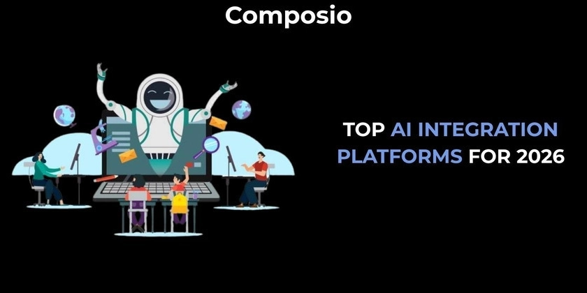
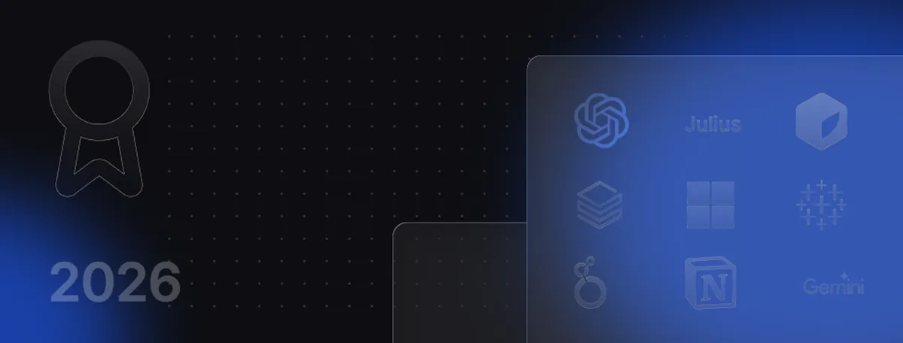

AI Tooling Ecosystem · 2026
The Three-Layer AI Stack
Integration platforms · AI-native analytics · No-code automation — layered for the BA, FA, and PO workflow
TL;DR
The 2026 shift is from static automations to autonomous AI agents. Success depends on layering the right integration, analytics, and no-code tools for your role — not picking one.
500+
Integrated tools
Composio ecosystem
Composio ecosystem
25+
Agent frameworks
supported in 2026
supported in 2026
8×
Projected growth
AI-enabled workflows
AI-enabled workflows
79%
of leaders expect
≥25% efficiency gain
≥25% efficiency gain
↑
The 2026 Shift
The defining change is the move from "if-this-then-that" triggers to autonomous AI agents.
Enterprise integration platforms now split into developer-first and business-focused camps —
each serving different governance, reproducibility, and speed requirements.
[1]
Layer 1 — Integration Platforms
Connecting AI agents to business systems
4 platforms

Production-grade AI agent integration with SOC 2 Type II certification and multi-framework support.
500+ tools · 25+ agent frameworks [1]
Handles data-prep for model training and real-time access patterns AI agents demand in production.
Production AI products [2]
Deep category coverage for HR, finance, and CRM with built-in governance and audit logging.
Regulated environments [1]
Merlin Agent Builder lets business users create autonomous workflows with human-in-the-loop controls.
No-code agent builder [1]
Layer 2 — Analytics & Business Intelligence
Speed up insight — from raw data to structured decision
7 tools

SQL drafting, formula debugging, and rapid ad-hoc exploration without a data engineering background.
Quick analysis layer [3]
Conversational data analysis with large file support — no SQL knowledge required.
32 GB file uploads [3]
Notebooks plus AI assistance for reproducible, auditable analytical workflows.
Reproducibility-first [3]
Embeds AI functions directly in SQL for governed, large-scale data processing pipelines.
AI functions in SQL [3]
Forecasting, anomaly detection, and natural-language Q&A for recurring enterprise reports.
Enterprise BI staple [3]
Visual analytics with AI-enhanced insights and natural-language data queries for exploration.
Visual exploration [3]
Translates raw analysis output into structured requirements and shareable documentation.
Analysis → requirements [3]
Layer 3 — No-Code Automation
Workflow independence without engineering bottlenecks
4 platforms
Market-leading automation platform with the broadest app ecosystem and built-in AI step support.
Widest integrations [4]
Visual workflow builder with advanced routing, error handling, and data transformation modules.
Visual-first design [4]
Self-hostable automation with code-optional customisation and full access to underlying logic.
Self-host option [4]
AI-first pipeline builder designed for autonomous, adaptive decision-making workflows.
Agent-native workflows [4]
Selection Strategy — pick layers by role
Business Analyst
Analytics + documentation priority
Integration — governance cases only
Analytics & BI — primary layer
No-Code — ad-hoc automations
Functional Analyst
Needs the full three-layer stack
Integration — audit & governance
Analytics — reproducibility focus
No-Code — workflow design
Product Owner
No-code tools + a BI layer
Integration — optional
Analytics — BI insights layer
No-Code — primary layer
1
Reproducibility
Can your analysis be audited and re-run? Requires documentation + dev environment — reach for Zerve or Databricks.
2
Governance
Need data scanning, policy controls, or audit logs? Lean enterprise integration platform — Merge or Tray.ai.
3
Speed vs. control
Rapid iteration → no-code (Zapier, Make, Gumloop). Strict controls → custom integration (Composio, Nango).